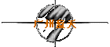
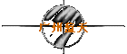

 


|
|
广州蓝天：telnet://bbs.gznet.com广州蓝天站是我通过香山红叶穿梭到 ChinaNet 上后接触的第一个ＢＢＳ。它的上站人数不是很多，一般50人左右（其实这是 ChinaNet 上大多数ＢＢＳ的常见上站人数）。不过它有个版吸引了我：那就是 SaveName 版。里面有着大量的 ANSI 创意图片，都是网友们花了大量的时间大量的心血做出来的，看起来都酷弊了。 蓝快(STW)是这个站的顶梁柱，呵呵，天天在网上泡着，看见什么好东东就给转到蓝天站上。:-) 这个站的 BBS Net 里的列表也很全，包括了大多数的中文ＢＢＳ。如果你还觉得不过瘾的话，那么你就再穿梭到 佛山ＢＢＳ 里去看看佛山ＢＢＳ的穿梭银河列表，呵呵，事先和你说：不要 FAINT ! *_^ |